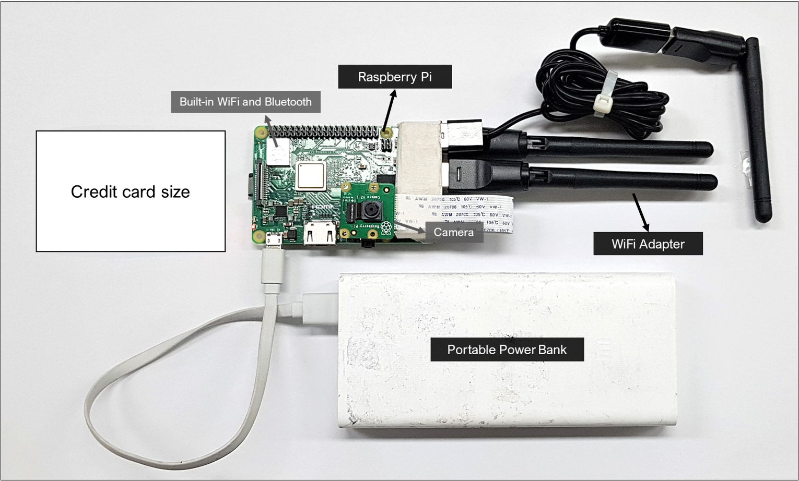
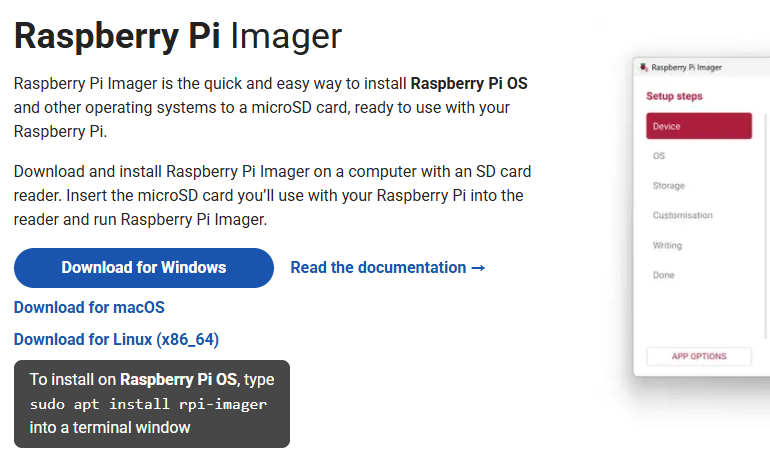
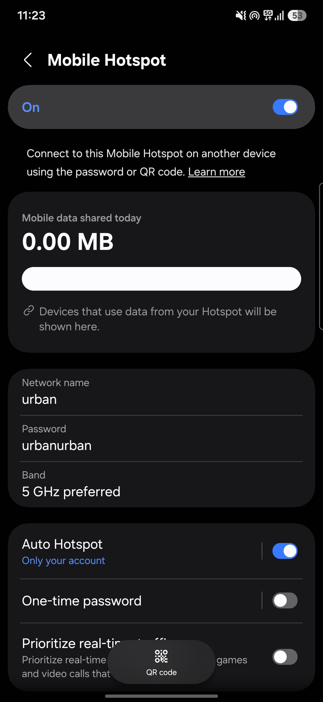
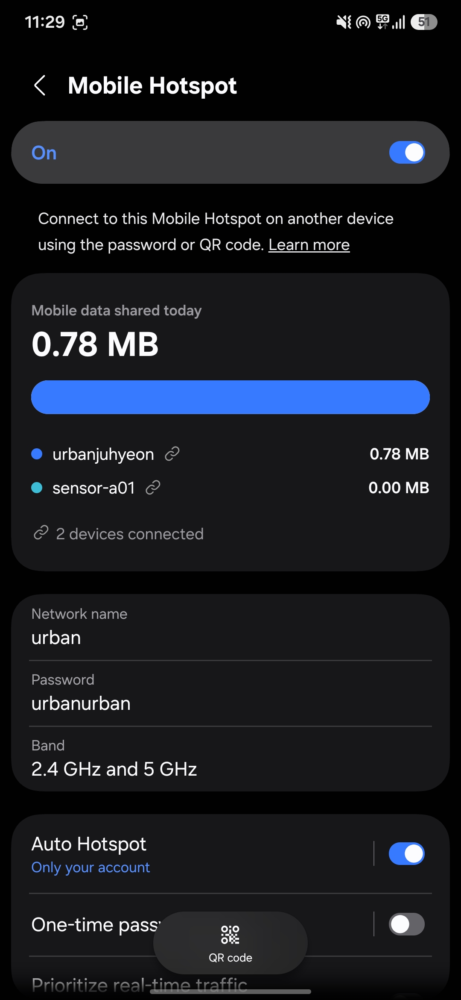
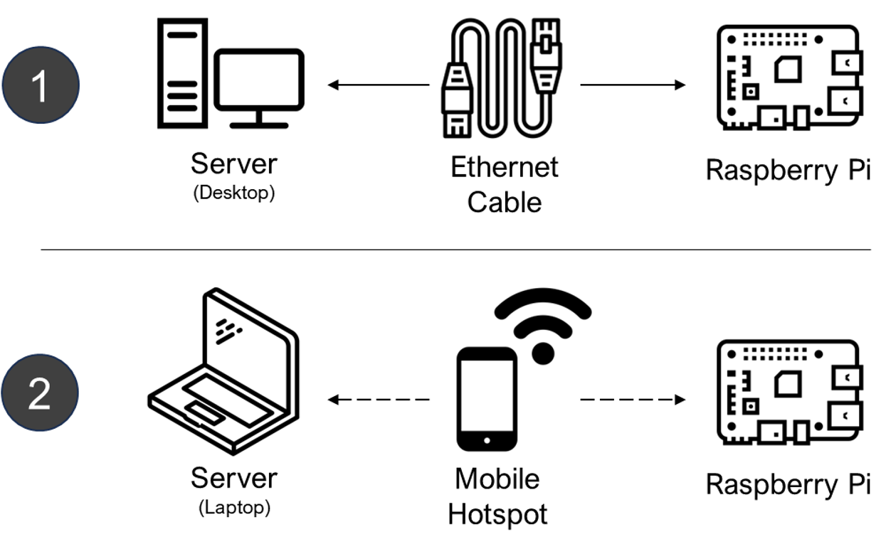
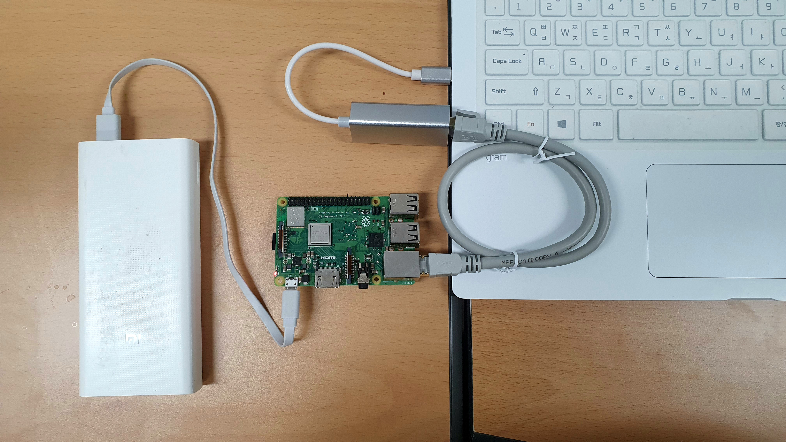
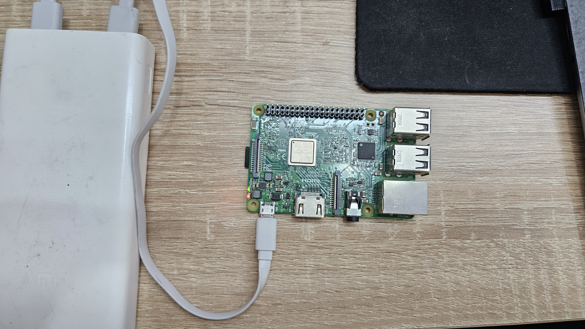
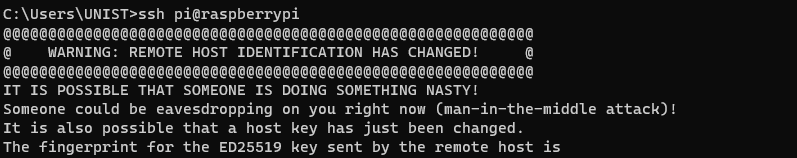
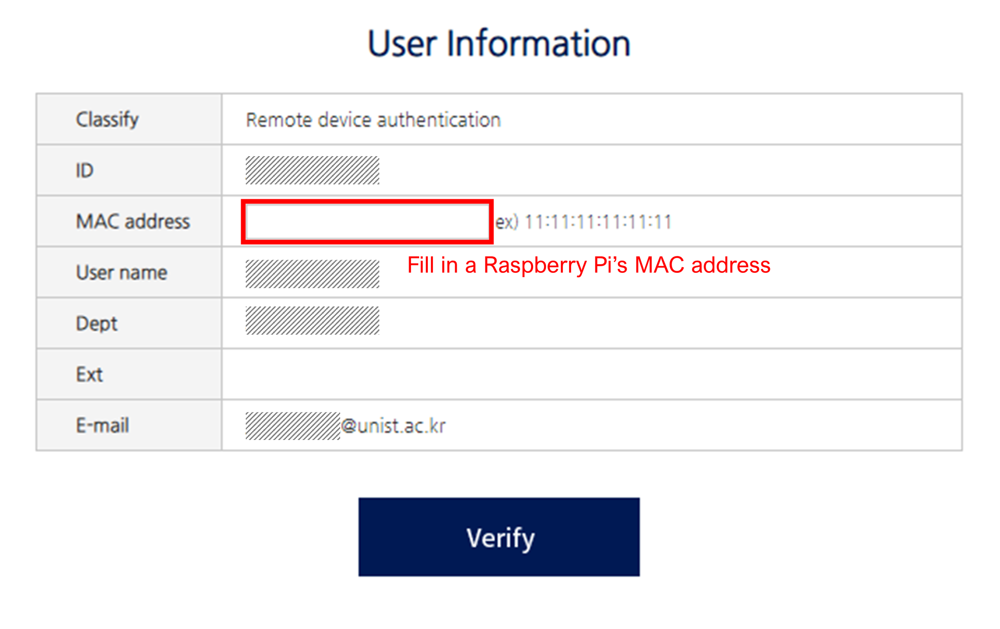

1 Prepare the Raspberry Pi
This chapter prepares the hardware, operating system, and management connection for a WiFi sensor. The complete setup sequence was checked in July 2026 using Raspberry Pi Imager 2.0.10, a Raspberry Pi 3, and Raspberry Pi OS Lite (32-bit), based on Debian Trixie. After assembling the components, you will install the operating system and establish remote access to the Pi via SSH. Imager labels may change slightly in later releases, but the sequence remains Device, OS, Storage, Customisation, and Writing. A troubleshooting section at the end covers common setup issues.
At the end of this chapter, Windows PowerShell reaches the prompt sensoradmin@sensor-a01:~ $ over SSH. No collector software is installed and no sensing has started.
Chapter 2 deliberately separates four different jobs:
- Prepare the Raspberry Pi: write the OS and prove that SSH works.
- Install the Collector: install and self-test the software without sensing.
- Configure the Experiment: assign the experiment, sensor, shared HMAC key, and capture channels without sensing.
- Validate and Deploy: perform a controlled capture, inspect the stored result, and only then enable automatic collection at boot.
Each chapter ends with a checkpoint. Do not skip ahead when a checkpoint does not match the expected result.
1.1 Components
The WiFi sensor consists of a single-board computer, one or more wireless adapters for packet capture, and supporting peripherals for power and storage:

The core components are:
- Raspberry Pi: A single-board computer, Model 3 or newer, that serves as the main computing unit.
- Capture WiFi adapter(s): External USB adapters with monitor-mode and radiotap RSSI support. The checked three-channel arrangement uses three adapters, one each for channels 1, 6, and 11. A one-adapter experiment is supported, but it observes only its configured channel. The Pi’s built-in WiFi is kept in managed mode for the hotspot and SSH connection in this walkthrough; it is not a capture adapter.
- Micro SD card and reader: Use at least 16 GB; 32 GB or more provides more room for field databases. The reader connects the card to the computer for imaging.
- Model-appropriate power supply: Use a stable supply that meets the Pi model’s voltage and current requirement during setup, including the added USB adapters.
- Portable power bank: For field use, choose one whose output rating meets the same requirement. Capacity such as 20,000 mAh affects runtime; it does not by itself guarantee adequate power output.
- Windows computer: Used to run Imager, transfer the collector, and manage the headless Pi through PowerShell and SSH.
- Optional Ethernet cable: Retained only as a fallback management route; the current main walkthrough uses a mobile hotspot.
Additional sensors such as cameras or environmental monitors can be added for extended data collection.
All components are commodity electronics. A complete unit as deployed in the 2019–2020 field studies (Appendix A) cost roughly USD 80–100 at the time: a Raspberry Pi Model 3 B+ (about USD 35–40) was the single largest item, the three RT5370 USB WiFi adapters added only a few dollars per set, and the rest went to a 32–64 GB micro SD card, a 20,000 mAh power bank, and casing and mounting materials. Prices vary by market and year, and any Pi Model 3 or newer works as long as the selected adapter’s monitor mode and radiotap RSSI support are confirmed through the controlled hardware test in the Deployment chapter.
For comparison, the Raspberry Pi 3 Model B+ board alone was listed at USD 40 in September 2026.1
Off-the-shelf counting options sit in a much higher range. Dedicated lidar counters cost several thousand dollars per unit: the SICK MRS1000 scanner, for instance, was listed by industrial distributors at roughly USD 4,900–5,700 as of 2026.2 Stereo-vision people counters such as the Xovis PC2 series retail at roughly EUR 1,300–1,800 per sensor, usually alongside a separate software license,3 and simpler infrared beam counters run EUR 90–500 per unit. Turnkey WiFi-analytics services, which most closely resemble what this toolkit does, are typically sold as ongoing subscriptions rather than one-off purchases: one 2024 evaluation reported about 885 SEK, roughly EUR 75 per measuring point per day, for such a service1.
The comparison is not that the do-it-yourself sensor is strictly better. The commercial options provide turnkey deployment, vendor support, and validated accuracy out of the box, which a self-built sensor does not. What the toolkit offers in exchange is a low hardware cost, direct access to the collected observation data, and the freedom to inspect and modify every step of the processing, which suits research use where transparency and adaptability matter more than plug-and-play convenience.
1.2 Operating System
Download the Pi Imager
Download the latest stable Raspberry Pi Imager from the official website and install it on your computer. On first launch, choose the language used for the Imager interface. This choice does not determine the Pi’s time zone, keyboard, or WiFi regulatory domain; those are configured separately under Localisation.
The current headless options and their meanings are also documented in Raspberry Pi’s official installation guide.

Raspberry Pi Imager 2.0.10 can render button labels incorrectly on some Windows systems. Close Imager, press Win + R, and launch it with the Windows GDI font engine:
"C:\Program Files\Raspberry Pi Ltd\Imager\rpi-imager.exe" -platform windows:fontengine=gdiFlash the OS
Insert the micro SD card and follow the Imager steps in order. A separate erase or formatting step is not required: Imager erases the selected storage device when it writes the operating system.
The following walkthrough shows the complete sequence used for the checked Pi 3 setup, from device selection through the start of writing. The username and hotspot credentials visible in the recording are example values.
The walkthrough uses these values consistently:
| Setting | Walkthrough value |
|---|---|
| Device | Raspberry Pi 3 |
| OS | Raspberry Pi OS Lite (32-bit) |
| Hostname | sensor-a01 |
| Time zone | Asia/Seoul |
| Keyboard | kr |
| Username | sensoradmin |
| Password | sensoradmin (example) |
| Wi-Fi name | urban (example hotspot) |
| Wi-Fi password | urbanurban (example) |
| SSH | Enabled with password authentication |
| Raspberry Pi Connect | Not enabled |
Readers should replace the example credentials and sensor identifier with the values selected for their own deployment, then use them consistently in later commands.
Step-by-step settings
The recording uses the following choices:
- Device: Select the Raspberry Pi model you have. The checked walkthrough uses Raspberry Pi 3.
- OS: For the Pi 3 walkthrough, select Raspberry Pi OS Lite (32-bit). The Lite edition is appropriate for a headless sensor because it does not install a graphical desktop. Pi 4 and Pi 5 users may select the corresponding Lite 64-bit image.
- Storage: Select the micro SD card. Confirm its capacity carefully and leave Exclude system drives selected so that the computer’s internal drive cannot be chosen accidentally.
- Hostname: Assign an opaque, unique hostname. This walkthrough uses
sensor-a01. Use letters, numbers, and hyphens only. - Localisation: Select the nearest capital city and confirm the suggested time zone and keyboard layout. For the checked Korean setup, these were
Seoul (South Korea),Asia/Seoul, andkr. - User: Create the ordinary administrator account used for SSH. The example uses
sensoradminfor both the username and password. Later commands use this example username consistently. - Wi-Fi: Select Secure network and enter the mobile hotspot’s SSID and password. The example uses
urbanandurbanurban. Enable Hidden SSID only when the hotspot is actually configured not to broadcast its name. - Remote access: Turn on Enable SSH. This walkthrough uses Use password authentication; public-key authentication is also supported for readers who already manage SSH keys.
- Raspberry Pi Connect: Skip this optional account-based service. It is not required by the collector or by the SSH route in this book.
- Writing: Review the summary. Confirm that the device, OS, storage, hostname, localisation, user account, WiFi, and SSH choices are correct; then select Write. Allow Imager to finish both writing and verification before removing the card.
Once complete, insert the SD card into the powered-off Pi. The external capture adapters are not needed for this first boot; Chapter 2.3 introduces them after SSH and the collector installation have been checked. Then connect power to boot.
The sensor needs a network connection at boot to obtain accurate time and to support SSH access during setup. A mobile hotspot provides the same predictable network at a desk and in the field, without depending on a captive portal or an institutional network.
The walkthrough uses example hotspot values. Substitute the network name and password of the hotspot that the Pi will actually use.
1.3 Remote Access
The current setup uses the mobile hotspot configured in Imager. The phone, the computer used for SSH, and the Pi must all be on that same hotspot.
1. Prepare the mobile hotspot
Turn on the phone’s mobile hotspot and use the same network name and password entered in Imager. The screenshots below use the example values urban and urbanurban.
For a Raspberry Pi 3, make sure the hotspot offers 2.4 GHz. In the example below, the initial 5 GHz preferred setting prevented the Pi from joining; changing Band to 2.4 GHz and 5 GHz restored compatibility. Menu labels vary by phone.

2. Boot the Pi and confirm the connection
Insert the flashed micro SD card, connect power, and allow several minutes for the first boot. Connect the computer to the same hotspot. Before attempting SSH, check the hotspot’s connected-device list: it should show both the computer and the Pi’s hostname, such as sensor-a01.

3. Connect from PowerShell with SSH
The following recording shows the first SSH login and the checks used in the July 2026 walkthrough.
Open PowerShell on the computer and connect using the username and hostname assigned in Imager:
ssh sensoradmin@sensor-a01.localOn the first connection, enter yes to accept the host key, then enter the account password. The password does not display while it is being typed. When the prompt changes to sensoradmin@sensor-a01:~ $, complete the following checks one at a time.
Confirm which Pi you reached
hostnameThe output should match the hostname assigned in Imager; this walkthrough reports sensor-a01.
Check the time zone and synchronization
timedatectlFind Time zone: Asia/Seoul and System clock synchronized: yes in the output. Readers in another location should see the time zone selected in Imager.
Check the current local time
dateConfirm that the displayed date and time are current. A substantially wrong clock should be corrected before installing or collecting data.
Check internet and DNS connectivity
ping -c 4 www.raspberrypi.comA successful check resolves www.raspberrypi.com and ends with received packets and 0% packet loss on the checked hotspot.
Return to Windows PowerShell
exitThe SSH session closes and the prompt returns to PS C:\Users\...> on the computer. This confirms that the complete remote-access loop works before the collector is installed.
If <hostname>.local cannot be resolved but the Pi appears in the hotspot’s device list, open the device entry to find its IP address and connect directly:
ssh sensoradmin@<ip-address>Raspberry Pi’s official remote-access guide documents the same .local, IP-address, SSH, and SCP routes.
Earlier versions of this guide presented Ethernet and mobile hotspot access as parallel setup options. The mobile-hotspot workflow above is the current main route. The older Ethernet route is retained here for a computer without WiFi or for a network on which the hotspot workflow cannot be used.

Ethernet cable
Connect the Pi to the computer using an Ethernet cable.

In Windows network settings, enable Internet Connection Sharing for the Ethernet adapter. After the Pi has booted, open PowerShell or Command Prompt and connect with:
ssh <username>@<hostname>.localEarlier mobile-hotspot illustration
The earlier guide used the following generic illustration. Its underlying requirement is unchanged: the Pi and the computer must be connected to the same hotspot before SSH can work.

1.4 Troubleshooting
Use the error shown in PowerShell to choose the relevant check below.
Could not resolve hostname
This message occurs before password authentication: the computer cannot translate <hostname>.local into the Pi’s IP address.
- Open the hotspot’s connected-device list and look for the hostname assigned in Imager, such as
sensor-a01. - If the Pi is absent, confirm that the hotspot name and password match the values entered in Imager. For a Raspberry Pi 3, also confirm that the hotspot offers 2.4 GHz.
- Allow several minutes for the first boot, then refresh the device list.
- If the Pi is listed but the
.localname still fails, open its hotspot entry to find its IP address and connect directly:
ssh sensoradmin@<ip-address>Connection timed out or Connection refused
These messages mean that an address was found but SSH did not answer. Confirm that the Pi has power, the micro SD card is inserted, and the first boot has finished. Also confirm that Enable SSH was selected in Imager. If an IP address was entered manually, recheck it in the hotspot’s current device list because hotspot addresses can change after reconnection.
SSH host key warning
After the OS is rewritten, the Pi can present a new SSH host key while the computer still remembers the old one. PowerShell then displays REMOTE HOST IDENTIFICATION HAS CHANGED:

Remove only the stored key for that hostname and reconnect:
ssh-keygen -R sensor-a01.local
ssh sensoradmin@sensor-a01.localReview the new fingerprint, enter yes, and then enter the account password.
Incorrect time or no internet access
After logging in, inspect time synchronization and test both DNS and internet connectivity:
timedatectl
ping -c 4 www.raspberrypi.comFor the checked Korean setup, timedatectl should report Asia/Seoul and, after synchronization, System clock synchronized: yes. If the ping fails, confirm that the phone itself has mobile-data access and that the Pi remains in the hotspot’s connected-device list.
University or corporate networks
Institutional networks can require device registration, a browser-based captive portal, or isolation between connected devices. These controls can prevent SSH even when both devices appear connected. Use the mobile-hotspot workflow for initial setup and field operation; if the institutional network is required, ask its administrator about device registration and peer-to-peer access.

PiShop.us, “Raspberry Pi 3 Model B Plus (B+),” https://www.pishop.us/product/raspberry-pi-3-model-b-plus/ (accessed 6 September 2026).↩︎
Figure from industrial distributor listings (Motion World; RS Components), retrieved July 2026. Prices for surveying-grade sensors change frequently and larger configurations are often quoted only on request, so treat this as an order-of-magnitude reference rather than a fixed price.↩︎
Authorized-distributor listing (Vemco Group) for the Xovis PC2SE line, retrieved July 2026. Enterprise counters are often sold through integrator quotes rather than fixed public prices, so treat this as indicative.↩︎